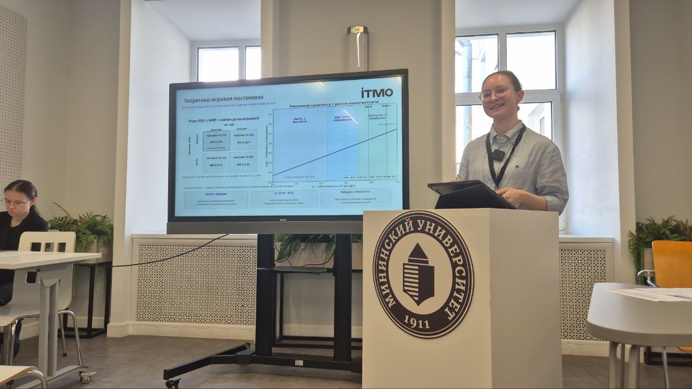
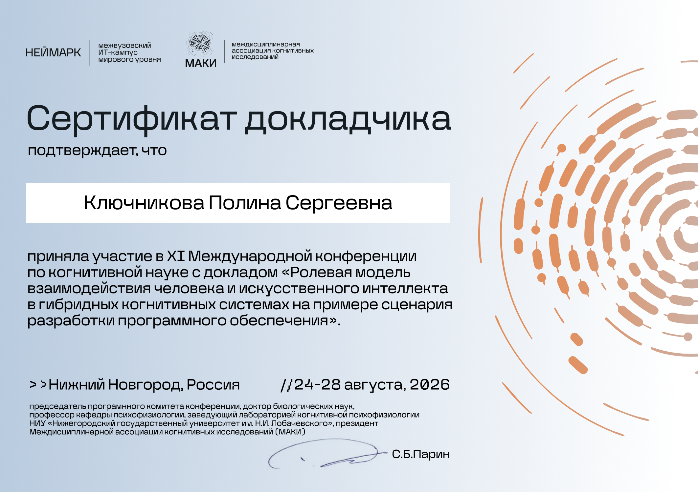

Game-theoretic models of human oversight
Modelling the incentives behind human verification, delegation and AI assistance.
Explore projectCognitive Science 2026
A role-based model of human–AI interaction in software development: when a person delegates, when they verify and how the AI’s role shapes the collaboration.
I presented a role-based account of human–AI interaction in hybrid cognitive systems, using software development as the application scenario. The model makes the choices of the human and AI explicit so that their interaction can be analysed.
The research connects delegation and verification to the roles of generator and assistant. Game-theoretic analysis provides a language for examining incentives, equilibria and the assumptions needed to interpret the observed behaviour.
The presentation was part of the “Cognitive Modelling: Mathematical Approaches — 2” session. The programme lists P. I. Zaitsev, P. S. Kliuchnikova, D. V. Fedrushkov, O. V. Kubryak and S. V. Kovalchuk.
Ролевая модель взаимодействия человека и искусственного интеллекта в гибридных когнитивных системах на примере сценария разработки программного обеспечения
Conference materials
A photograph from the presentation and the speaker certificate.

Presenting the role-based model of human–AI collaboration in Nizhny Novgorod, August 2026.
Open full photograph
XI International Conference on Cognitive Science
MAKI · NEIMARK
24–28 August 2026 · Nizhny Novgorod
Modelling the incentives behind human verification, delegation and AI assistance.
Explore project